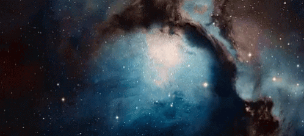
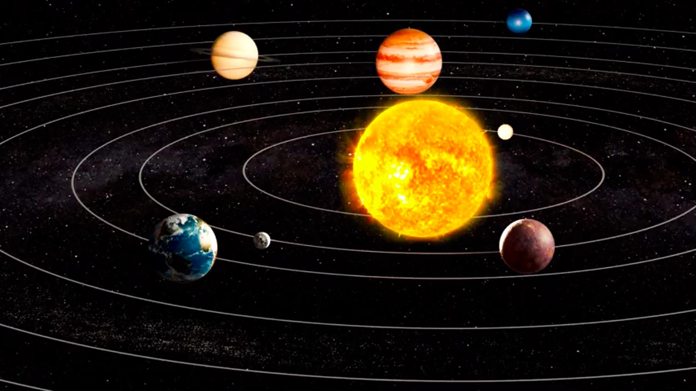
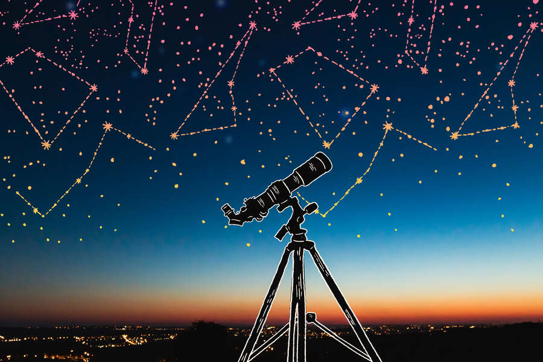
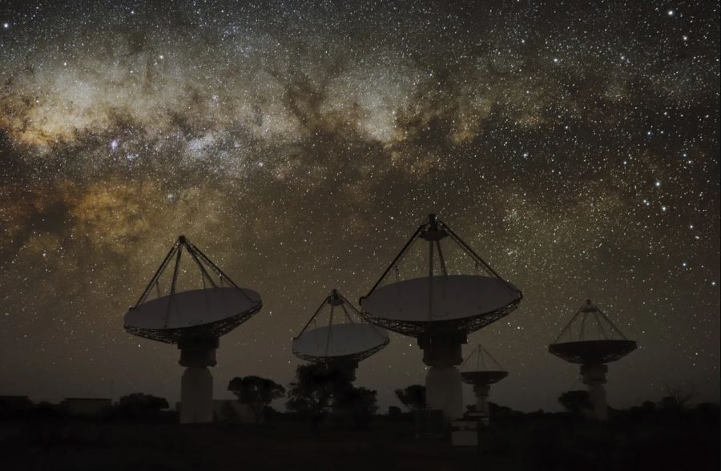
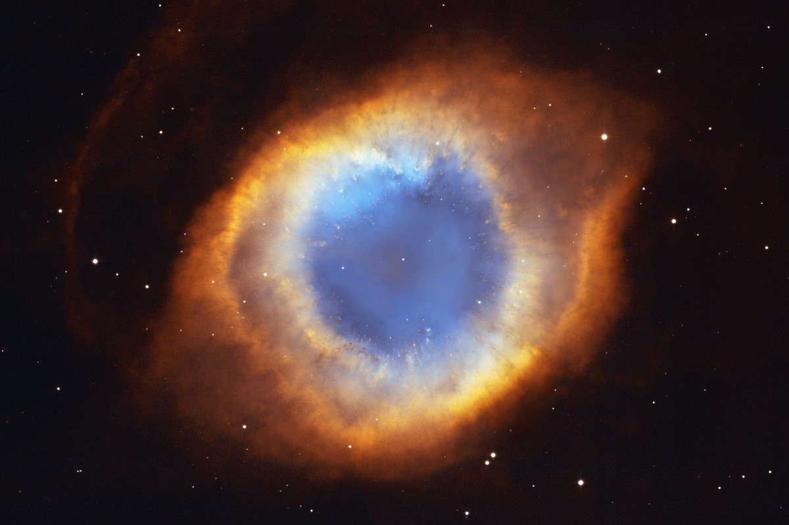

ASTRONOMY SCIENCE

DEFINITION OF ASTRONOMY

Astronomy is the study of everything in the universe that’s beyond our own planet’s atmosphere.
The planets in our own solar system, our own star the sun, and the bright stars can all be seen with
the naked eye. However, astronomy can go much deeper, taking advantage of telescopes and other
scientific instruments to study other stars and their planets in our galaxy, as well as distant
galaxies beyond our own.
It can gather clues about the nature of the physical, chemical and biological universe itself.
Modern astrologers attempt to do something similar, making predictions about human lives based
on pseudoscience. Astrology is not a science.
WHAT ASTRONOMERS DO (AND DON’T DO)

Astronomers aren’t stargazers. Or, at least, there’s no longer any need for them to be. If you
think an astronomer treks up mountains to spend night after night behind the eyepiece of a giant
telescope, think again. These days telescopes can be controlled remotely, so it’s common for
modern astronomers to simply make requests for observations and then download computer-generated
data and images the next morning for their analysis. That includes space telescopes like the
Hubble Space Telescope.
People very often confuse astronomy with astrology. Every professional astronomer has had to hear
someone say to them, "so you’re an astrologer, right?" Astrology and astronomy are not the same thing, but they used to be. Observational astronomy can be traced back to Ancient Egypt and Mesopotamia as far back as 3,000 B.C., but the calculating of solar eclipses, the movements of the planets and theories about how the night sky works was the job of ancient astrologers who presumed that celestial events and alignments had a direct impact on human affairs.
Modern astrologers attempt to do something similar, making predictions about human lives based on
pseudoscience. Astrology is not a science.
WHAT ARE OPTICAL, INFRARED AND RADIO ASTRONOMY

All astronomy is the study of different wavelengths of the electromagnetic spectrum, which
comprises radio, microwave, infrared, visible, ultraviolet, X-ray and gamma rays. To get the
full picture of what’s out there astronomers need to study various wavelengths of light.
Optical astronomy is the study of celestial objects using telescopes and in visible light;
all of the biggest telescopes on Earth are optical. Infrared light can be detected outside of
the Earth’s atmosphere, so by space-based observatories like the Hubble Space Telescope and
the James Webb Space Telescope. Radio astronomy is the study of the sky in radio frequencies;
radio telescopes detect and amplify radio waves from space.
THE PROBLEM WITH ASTRONOMY

However they observe the universe, astronomers only ever get a snapshot of the planets, stars
and galaxies they study. So although there are dozens of different branches of astronomy, in practice
many of them must overlap for an astronomer to get as full a picture as possible of objects that
exist for millions to billions of years.
We’re on the cusp of some tremendously exciting new technology that looks set to revolutionize
astronomy. The most obvious is the James Webb Space Telescope, which from 2022 will probe the cosmos to uncover the history of the universe.
Though just as exciting is the Vera Rubin Observatory all-sky survey and the a new generation
of massive ground-based telescopes like the Extremely Large Telescope, which should all see
‘first light’ in the mid-2020s. The Square Kilometre Array, the world’s largest radio telescope,
should also be operating by the late 2020s.
Astronomers are about to see deeper into space to observe regions and objects never seen before.